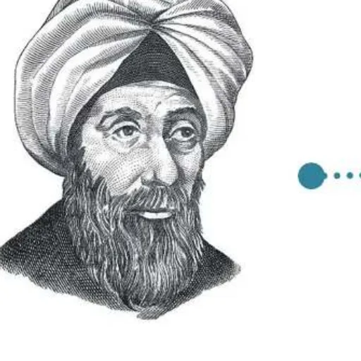

بِطاقَةُ الْمَصادِرِ وَالْمَفاهيمِ: الْحَسَنُ بْنُ الْهَيْثَمِ
الدِّراساتُ الِاجْتِماعِيَّةُ · الصَّفُّ الثّالِثُ · ص 72–76
لِلْجَميعِ

وُلِدَ الْحَسَنُ بْنُ الْهَيْثَمِ في الْبَصْرَةِ في الْقَرْنِ الْعاشِرِ الْميلادِيِّ في الْعَصْرِ الذَّهَبِيِّ لِلْحَضارَةِ الْإِسْلامِيَّةِ، وَدَرَسَ الطِّبَّ في بَغْدادَ وَتَخَصَّصَ في طِبِّ الْكِحالَةِ (الْعُيونِ)، وَانْتَقَلَ إِلى مِصْرَ وَتُوُفِّيَ فيها، وَاحْتَفَلَتْ بِهِ الْأُمَمُ الْمُتَّحِدَةُ في السَّنَةِ الدَّوْلِيَّةِ لِلضَّوْءِ 2015م.📖 أَقْرَأُ النَّصَّ
الْمُعَلِّمُ: لَفَتَ نَظَرَنا شارِعُ الْحَسَنِ بْنِ الْهَيْثَمِ في إِمارَةِ عَجْمانَ، وَأَطْلُبُ إِلَيْكُمُ الْآنَ تَحْضيرَ بِطاقاتٍ تَحْتَوي عَلى مَعْلوماتٍ عَنْ هٰذا الْعالِمِ؛ لِنَتَوَصَّلَ إِلى سَبَبِ تَسْمِيَةِ الشّارِعِ بِاسْمِهِ. أَحْمَدُ: اعْلَمْ يا مُعَلِّمَنا الْفاضِلَ، أَنَّنا اسْتَمْتَعْنا بِالْقِراءَةِ عَنْ هٰذا الْعالِمِ، وَأَنَّنا نَفْخَرُ بِجُهودِ عُلَمائِنا الْمُسْلِمينَ. راشِدٌ: وُلِدَ ابْنُ الْهَيْثَمِ وَاسْمُهُ الْكامِلُ (أَبو عَلِيٍّ الْحَسَنُ بْنُ الْحَسَنِ بْنُ الْهَيْثَمِ) في مَدينَةِ الْبَصْرَةِ في الْقَرْنِ الْعاشِرِ الْميلادِيِّ، وَعاشَ في فَتْرَةٍ ذَهَبِيَّةٍ مِنْ فَتَراتِ الْحَضارَةِ الْإِسْلامِيَّةِ، وَكانَ مُطَّلِعًا عَلى الْكُتُبِ الْعِلْمِيَّةِ في الْعُلومِ وَالرِّياضِيّاتِ، وَقَدْ دَرَسَ الطِّبَّ في بَغْدادَ، وَتَخَصَّصَ في طِبِّ الْكِحالَةِ (الْعُيونِ) وَكانَ أَهْلُ بَغْدادَ يَقْصِدونَهُ في عُلومٍ عِدَّةٍ. عَبْدُ اللهِ: انْتَقَلَ ابْنُ الْهَيْثَمِ إِلى مِصْرَ، وَحاوَلَ تَأْسيسَ مَشْروعٍ لِلسَّيْطَرَةِ عَلى ماءِ نَهْرِ النّيلِ، وَتُوُفِّيَ وَدُفِنَ فيها عِنْدَما كانَ عُمُرُهُ يُقارِبُ (75) عامًا. خَصَّصَتْ هَيْئَةُ الْأُمَمِ الْمُتَّحِدَةِ عامَ 2015م سَنَةً دَوْلِيَّةً لِلضَّوْءِ وَتِكْنولوجْيا الضَّوْءِ، تَحْتَفِلُ فيها بِذِكْرى رُموزٍ عِلْمِيَّةٍ ساهَمَتْ في فَهْمِ الْإِنْسانِيَّةِ لِلضَّوْءِ، وَاحْتَفَلَتْ بِالْحَسَنِ ابْنِ الْهَيْثَمِ بِاعْتِبارِهِ قَدْ حَقَّقَ إِنْجازاتٍ كَبيرَةً في مَجالاتِ الْبَصَرِيّاتِ وَالرِّياضِيّاتِ، وَعِلْمِ الْفَلَكِ. حَقيقَةٌ تاريخِيَّةٌ: الْحَضارَةُ الْإِسْلامِيَّةُ هِيَ نِتاجُ ما قَدَّمَهُ الْمُسْلِمونَ في الْعالَمِ مِنِ ابْتِكاراتٍ وَإِبْداعاتٍ.
كِتابي ص 72–76
📘 كَلِماتي
الْعَصْرُ الذَّهَبِيُّ
✨
طِبُّ الْكِحالَةِ
👁️
الْبَصْرَةُ
🏙️
الْعالِمُ
🧑🔬
💡 تَعَلَّمْتُ
🏙️وُلِدَ في الْبَصْرَةِ.
📚دَرَسَ الطِّبَّ في بَغْدادَ.
👁️تَخَصَّصَ في طِبِّ الْعُيونِ.
🌊انْتَقَلَ إِلى مِصْرَ.
✅ أُطَبِّقُ
☐أُعِدُّ بِطاقَةَ عالِمٍ.
☐أُكْمِلُ كِتابي ص 75–76.
🏅 ⭐ أَحْسَنْتَ